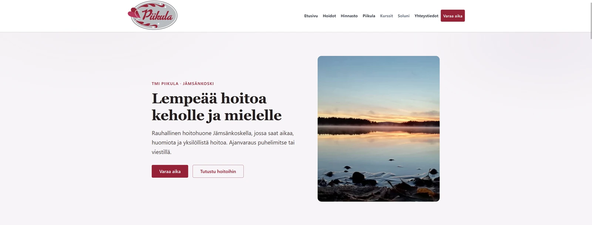
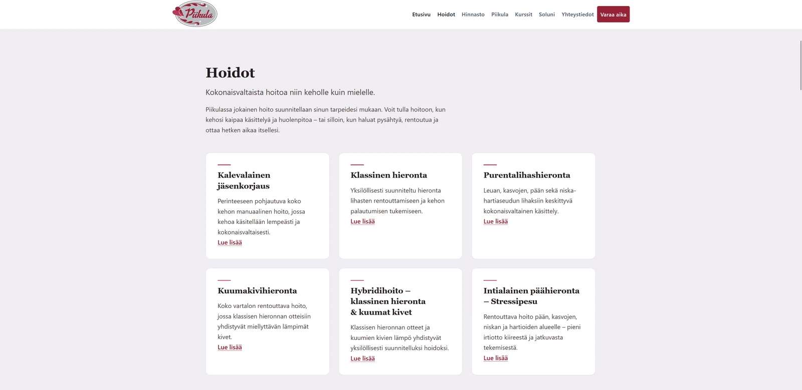
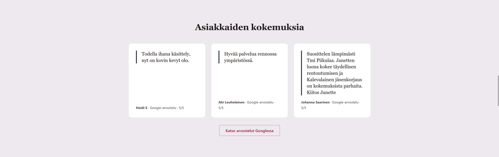

Arkkitehtuuri
WordPress ja Kadence muodostavat pohjan, jonka päälle Piikula-lapsiteema toteuttaa räätälöidyn ulkoasun ja toiminnallisuuden. Git-hallittu lähdekoodi julkaistaan rajatulla FTPS-siirrolla tuotantoon.
Yrityssivusto · WordPress · Asiakasprojekti
Tuotannossa
Tmi Piikulalle toteutettu WordPress-sivusto tekee palveluista, hinnoista, yhteydenotosta ja Soluni-yhteistyöstä helposti löydettäviä sekä puhelimella että työpöydällä.
Piikula on Jämsänkoskella toimiva hieronta- ja hyvinvointialan yritys. Projektissa rakennettiin uusi WordPress-sivusto, jossa palvelut, hinnat, yhteystiedot ja Soluni-yhteistyö ovat helposti löydettävissä kaikilla näytöillä.
Toteutus tehtiin Kadencen päälle räätälöitynä Piikula-lapsiteemana. Visuaalinen suunta rakentuu Piikulan oman brändin ympärille: lämmin, naisellinen, rauhallinen ja hoivaava, mutta samalla ammattimainen ja saavutettava.
Hoitojen, hintojen ja yhteydenoton pitää löytyä ilman pitkää selaamista tai epäselvää polkua.
Ajanvaraus sovitaan henkilökohtaisesti puhelimella tai viestillä. Sivusto tekee yhteydenotosta selkeän ja vaivattoman erityisesti mobiilissa.
Sisältöä voidaan ylläpitää WordPressissä, samalla kun räätälöity toteutus ja tuotantomenettely pysyvät hallittuina.
Kuvakaappaukset Piikulan toteutetusta verkkosivustosta. Klikkaamalla kuva avautuu täysikokoisena.



Sivusto suunniteltiin Piikulan omaksi, rauhalliseksi palvelukokemukseksi eikä yleiseksi spa-malliksi. Virallinen viininpunainen ja roosan sävymaailma, vaaleat pinnat, harkittu typografia ja väljä taitto tukevat selkeää sisältöhierarkiaa.
Aidot yrittäjä-, yritys- ja luontokuvat korvasivat tarvittaessa geneerisen kuvamaailman. Saavutettava kontrasti, näkyvät kohdistustilat ja hillitty sommittelu pitävät käyttökokemuksen rauhallisena ja selkeänä.
Navigaatio, CTA-kosketuskohteet, hinnasto, asiakasarviot, yhteyslinkit, kortit, kuvien rajaukset ja Soluni-sivu validoitiin 320, 360, 390, 411 ja 430 pikselin leveyksissä. Kehityksessä testattiin myös fyysisellä Android-laitteella ja tarkistettiin vaakasuuntaisen ylivuodon puuttuminen.
Kokonaisuuteen kuuluvat etusivun palveluesittely, hoidot ja hinnat, yrittäjän esittely aidolla muotokuvalla, Google-arviot, yhteystiedot, some-linkit, sijainti ja ajo-ohjeet sekä responsiivinen navigaatio ja puhtaat pysyvät osoitteet.
Erillinen /soluni/-sivu esittelee tuotteita ja Piikulan kautta saatavaa henkilökohtaista palvelua. Sivulla käytetään aitoja tuote- ja elämäntyylikuvia, ja yhteydenotto onnistuu myös tekstiviestillä.
Tuotteiden verkkokauppapolku jatkuu Arctic Nutritionin ulkoiseen kauppaan. Piikula ei isännöi verkkokaupan kassaa.
Tuote-esittelyn rinnalla sivu kertoo erikseen yhteistyömahdollisuudesta ja ohjaa kiinnostuneen ottamaan yhteyttä.
Hakukonenäkyvyys huomioitiin rakenteesta lähtien: tekninen SEO, hakukoneystävällinen sisältörakenne, puhtaat URL-osoitteet ja Google Search Console -valmius ovat osa julkaisun valmistelua.
Semanttinen otsikkorakenne, kuvaavat vaihtoehtoiset tekstit, selkeä sisältöhierarkia ja paikallista löydettävyyttä tukeva sisältö rakennettiin osaksi sivustoa.
Keskeiset toiminnot ovat saavutettavissa näppäimistöllä, kohdistustilat ovat näkyviä ja sisältö säilyy luettavana eri näyttökoissa.
Tietoturva huomioitiin osana tuotantovalmiutta eikä erillisenä jälkityönä. Toteutukseen kuuluvat HTTPS-pakotus, hakemistojen suojaukset, WordPressin kovennus, päivitys- ja varmuuskopiointitarkistukset sekä rajattu FTPS-tuotantodeployment.
WordPress ja Kadence muodostavat pohjan, jonka päälle Piikula-lapsiteema toteuttaa räätälöidyn ulkoasun ja toiminnallisuuden. Git-hallittu lähdekoodi julkaistaan rajatulla FTPS-siirrolla tuotantoon.
Tekninen dokumentaatio kattaa arkkitehtuurin, WordPressissä ja Gitissä hallittavan tilan, deploymentin, design-säännöt, responsiivisuuden, kuvat, ylläpidon sekä tuotannon ja tietoturvan tarkistuslistat. Dokumentaatio pidetään synkronissa arkkitehtuurimuutosten kanssa.
Tuotannossa